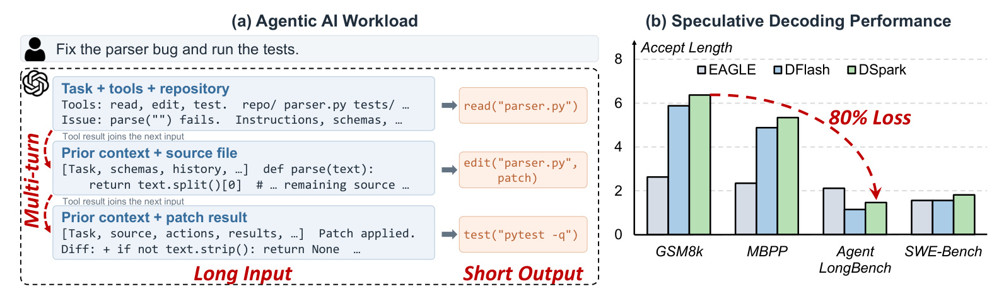
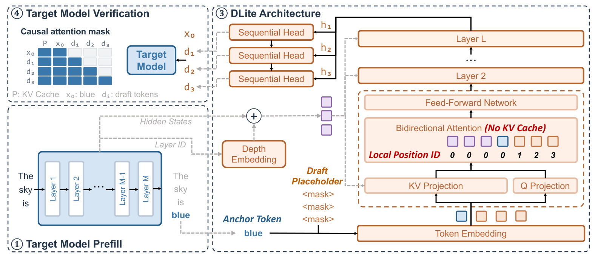
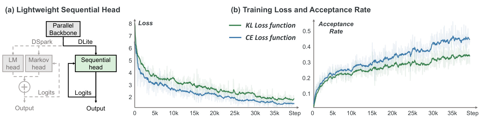
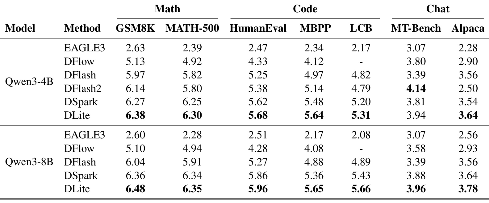
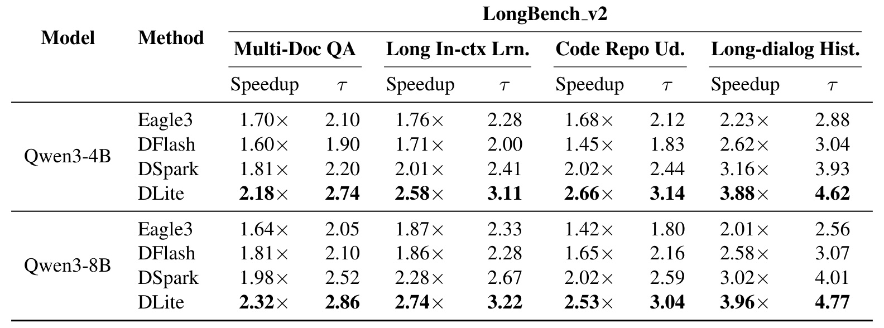
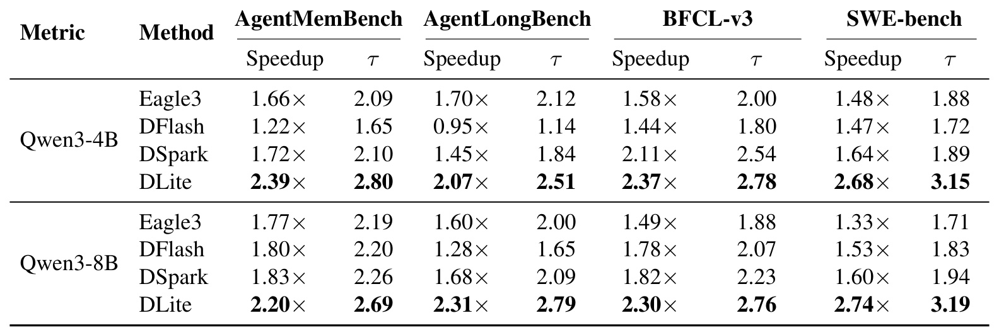
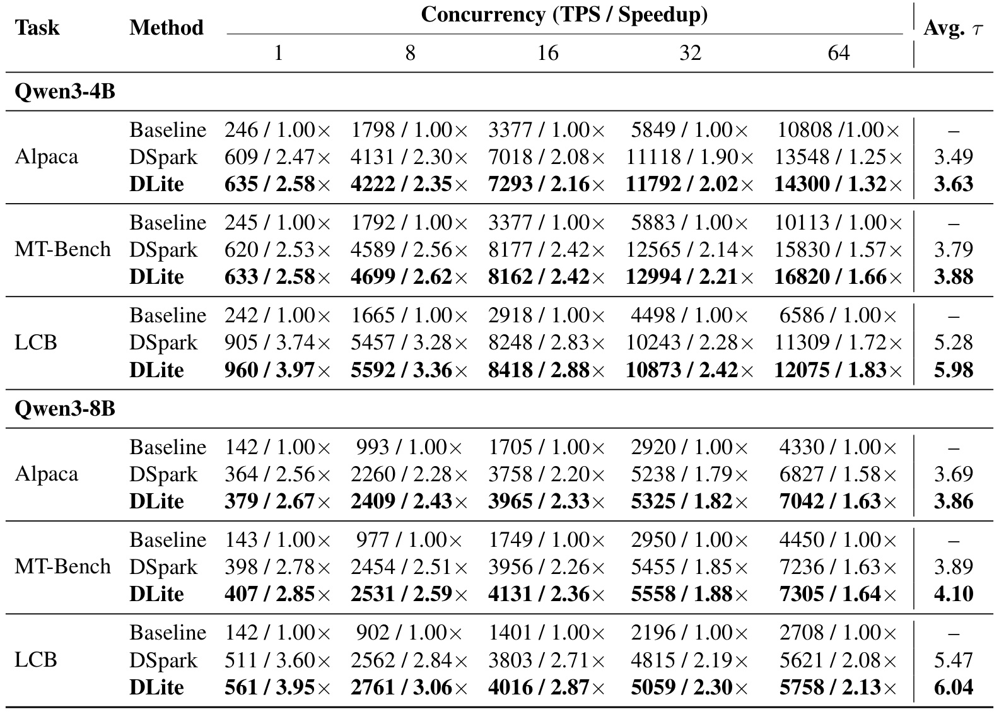
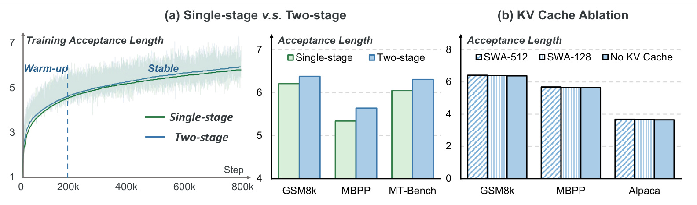
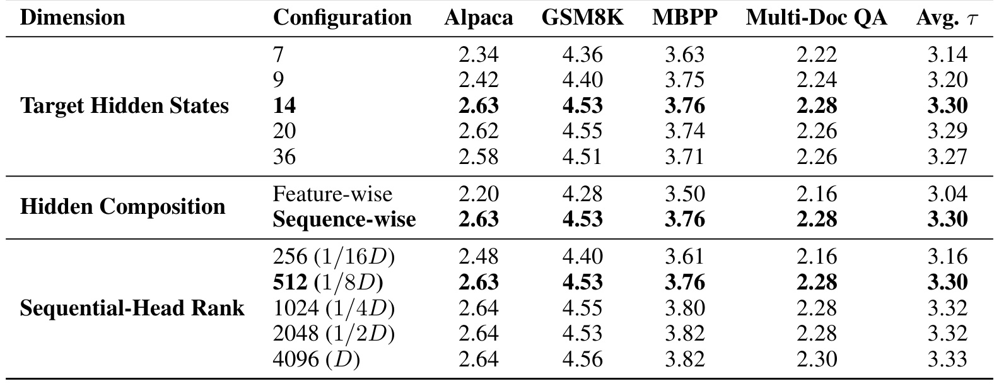

DLite：把 Agent 投机解码从重复建模历史改成局部预测
DLite: History-Free Speculative Decoding for Agentic AI 由上海交通大学主导，合作机构包括上海创智学院、清华大学和无问芯穹；共同一作为 Jiaming Xu、Hanzhen Wang。论文于 2026 年 10 月 16 日首次提交 arXiv，本笔记记录于 2026 年 10 月 20 日，属于 LLM 推理系统方向。论文入口。官方代码与模型集合由原文给出，代码已由当日事实包核验返回 HTTP 200；模型集合为原文入口，未独立验证模型下载，笔记没有执行代码或复现性能。
Agent 的输入越来越长、交互越来越频繁，现有轻量草稿模型一方面难以跟上目标模型的预测分布，接受长度可能大幅下降，另一方面还要重复维护已经被目标模型处理过的历史 KV 状态。能否直接复用目标隐藏状态，让草稿模型只负责当前位置附近的预测，从而同时缓解预测退化与历史维护开销？
1. 背景和问题
1.1 Agent 把投机解码的假设推到了什么位置
投机解码的出发点很直观：大模型逐词解码时，每前进一步都要执行一次昂贵的目标模型前向；如果小草稿模型先便宜地产生一串候选，大模型一次并行验证多个位置，就有机会把多次昂贵计算摊到同一轮。真正决定收益的不是草稿能一次吐出多少个词，而是这些词中有多少能被目标模型接受，以及为了得到这些候选额外付出了多少时间。如果草稿便宜但一直猜错，或者猜得好却自己运行很慢，两者都可能损失收益。本文把这两个因素分别落实为接受长度和草稿侧延迟，关注的是它们如何随 Agent 上下文增长而恶化。
Agent 与一次性问答的差别并不只在输入长度。修代码时，初始问题、工具定义、代码库说明、读文件结果、修改记录和测试输出会陆续加入上下文。模型每次可能只输出很短的一次工具调用，下一轮却必须重新基于越来越多的历史证据做决定。工具返回的内容往往比模型输出长得多，因而草稿模型即使生成不了多少新词，也得为庞大的历史表示支付维护成本。连续多轮还要求保存或复用前缀，草稿 KV 不再是一次请求结束后随即丢弃的内部状态，而成为跨调用需要管理的系统对象。

原图左半部分把一次修复解析器错误的任务展开为读取文件、编辑和运行测试三个阶段。蓝色框内的上下文逐步吸收源代码和补丁结果，右侧橙色框却只是一条短工具调用；“长输入、短输出、多轮”因此是彼此关联的负载特征。右半部分纵轴是接受长度，横轴从数学、代码基准切换到 AgentLongBench 和 SWE-Bench，比较 EAGLE、DFlash、DSpark。图示强调，常规任务上每轮接受较多 token 的方法，在某些 Agent 负载上只能接受约一到两个。标注的百分之八十是作者用来展示失效幅度的观测，并不是所有数据集或所有模型都共同下降的统一统计量。更不能把接受长度的下降直接写成任务准确率下降，因为这一图没有报告准确率；严格验证下拒收草稿影响的是效率，目标模型仍负责决定最终输出。图中的工具循环则解释了为什么仅在短问答测得的草稿性能不足以判断 Agent 服务收益。两侧合起来形成具体的诊断顺序：先确认真实请求是否具有长输入与频繁工具反馈，再观察相同草稿器是否在这些输入上失去接受优势，避免把单纯任务难度与上下文维护混为一谈。
1.2 三种草稿架构仍共享同一份重复劳动
已有草稿器大致可以按生成依赖分成自回归、并行和半自回归。自回归草稿按顺序产生候选，保留候选之间的因果关系，但需要多次顺序执行；并行草稿一次计算所有候选位置，运行便宜，却难以利用当前草稿块中刚产生的词；半自回归先并行得到表示，再用一个轻量顺序模块补充块内依赖，在质量与草稿耗时之间折中。DLite 并不把这三个类别当成非此即彼的选择，它属于半自回归设计，主要改变的是草稿器对历史的责任分配。
这些方法通常都让草稿模型独立接收历史，保存过去 token 的键值状态。历史很短时，这种冗余可能不是首要问题；历史不断增长后，小模型既要有足够表示能力理解全部历史，又要执行缓存更新、接受前缀提交和跨轮前缀复用。本文认为两类损失有共同根源：目标模型已经为整段上下文做过高质量计算，草稿还要以很小的模型容量重新做一次。作者在 SGLang 中对 DeepSeek-V4 多 token 预测模块的观测显示，相关历史 KV 更新和维护可以占端到端推理延迟的百分之十到二十。这是动机测量，不能直接当作 Qwen3 上 DLite 所有实验的独立时间分解，也不能据此宣称任意推理引擎都可以固定省去同样比例。
论文的历史免维护指的是草稿模型不再显式维护随序列增长的历史 KV。目标模型仍然有正常历史和自己的 KV 缓存，否则它无法处理真实的长上下文任务。历史信息也没有凭空消失，而是被目标模型隐藏状态压缩后传给草稿。这个区别很重要：DLite 不是长上下文截断算法，不是稀疏目标注意力，也没有降低目标模型本身的上下文存储阶数。它试图删去的是第二套、属于草稿模型的增长型历史表示，让有限草稿容量集中解决局部生成。
论文背景给出的近似加速关系是：
符号解释：目标模型为 $M_T$，草稿模型为 $M_D$，$N$ 为每轮候选长度，$\tau$ 为该轮实际产出的平均 token 数，两个时间函数分别表示目标验证和草稿执行耗时。这一表达式是理解系统权衡的近似式，忽略了具体调度、前缀命中及工具执行等因素，不能直接代替实测吞吐。提高分子中的接受长度与降低分母中的草稿耗时可以同时发生，也可能互相抵消。因此全文后续同时报告接受长度、相对普通自回归解码的加速和并发吞吐，才足以支撑它是一个系统设计，而不仅是一种更会猜 token 的训练技巧。
从问题定义看，草稿历史与目标历史之间的冗余还是一种资源分配问题。增加草稿窗口可以减少信息遗漏，却同时扩大轻量模型需要理解的范围；缩小窗口能够节约成本，却可能与目标预测分布更不一致。作者选择从目标侧传递多层状态，相当于把这一矛盾转移成表示接口是否足够以及草稿能否学会利用的问题。后面的训练桥梁和隐藏层数量实验，正是对这一新瓶颈的回应，而不是与缓存移除无关的额外技巧。
对推荐系统读者，这篇论文的直接价值主要在 LLM 服务侧。如果一个推荐 Agent 要反复读取候选、调用检索或解释工具，其交互形态可能与本文相近；但论文没有推荐点击数据、召回或排序实验，不能从投机加速推导推荐效果提升。适合带走的是“由昂贵模型承担全局历史、轻量模块承担局部预测”的计算职责分配思路，而是否能用于具体线上推荐链路，仍需用自己的输入输出长度、工具耗时和并发分布验证。
2. 方法
2.1 历史免维护的并行骨干
DLite 的输入包含目标模型提供的若干层隐藏状态、当前锚点 token，以及代表将来候选位置的占位符。隐藏状态携带目标模型已经理解过的历史上下文，锚点告诉草稿当前实际落在哪个词，占位符则让并行骨干为未来多个位置各产生一个表示。与普通把整段历史 token 再喂给草稿的路线相比，这里传递的是目标计算后的上下文表示，草稿的显式预测范围局限在当前块。因为目标不同层的状态与普通 token embedding 来源不同，论文额外加入可学习的深度 embedding，并在使用多层状态时标记源层：
符号解释：$h_t^{(l)}$ 是目标模型第 $l$ 层、位置 $t$ 的隐藏状态，$e_{\mathrm{depth}}^{(l)}$ 是对应源层的可学习标识，$z_t^{(l)}$ 为传入草稿的带来源表示。论文采用序列方向组合多个层的状态，把各层当成不同输入元素，而不是把所有层硬拼成一个很宽的特征。这使深度标识成为让注意力区分不同信息来源的自然组成部分。位置编码也改为局部编号；图中隐藏状态和锚点处于局部参考位置，后续候选位置从近到远编号，不再把整条生成历史的绝对位置范围转嫁给草稿。这里的稳定复杂度是草稿局部计算结构不随累计历史无限扩张，不表示目标验证的长上下文访问成本也恒定。

阅读这张图要先看左下角的目标预填充，而不是先看右侧橙色草稿网络。目标模型处理“The sky is”，形成自己的分层表示并产生下一锚点“blue”；来自目标层的隐藏状态经深度标识后送入草稿，构成压缩的历史条件。右侧底部把锚点和若干 mask 占位符编码，注意力模块对这些局部输入执行双向计算，没有草稿历史 KV 的连续更新链。并行骨干输出各候选位置的隐藏表示后，再交给上方顺序头依次生成候选。最后左上角由目标模型按标准因果掩码验证整个候选块，目标端依然保留原先历史缓存，所以“无 KV”只应读取为图中草稿骨干的属性。图中的虚线表示特征或候选在模块之间传输，黑色实线表示局部预测内部依赖；把两者混为同一条自回归路径，会误以为隐藏状态必须在草稿端重新循环维护。这个结构还说明，输入压缩没有承诺一个隐藏状态足够概括任何任意长历史，论文实际选择多个目标层并通过实验决定数量，模型仍需训练才能学会利用这些条件。它节省的是重复的草稿历史建模和管理，却新增了目标隐藏状态提取与接口对接要求，工程实施必须确认服务引擎能够提供这些状态。还可以按每轮重建的边界来理解：一次验证提交的前缀决定新锚点，下一块再次从最新目标状态构造局部输入，不延续上一块的草稿历史缓存。紫色状态来自不同目标层，深度标识区分来源，局部位置则区分锚点与候选偏移，这两个标识承担不同职责。框内出现的键值投影是本轮注意力计算所需，并不意味着恢复跨轮历史存储；左上角的验证因果掩码仍阻止目标位置偷看未来候选，从而保留标准投机流程的判定边界。
2.2 低秩顺序头只补草稿块内部缺失的因果关系
并行骨干计算位置表示时，前面的候选词还没有真正采样出来。目标模型给出的隐藏状态可以传递块开始前的历史，但不能提前包含当前块中尚未生成的实际词。因此，论文先把目标预测的条件拆开，再用一个低秩、类似 RNN 的状态压缩此前的块内候选，最后让每个并行位置表示与这个状态共同预测：
符号解释：$t$ 是块开始位置，$T$ 是块内偏移，$p_T$ 表示目标分布，此处下标与偏移同字母但语义由上下文区分；$E$ 为 token embedding，$s_T$ 是顺序头对先前块内词的压缩状态，$g_\phi$ 为低秩递归更新，$h_T$ 是并行骨干提供的位置表示，$q_{\theta,\phi}$ 是完整草稿分布。式三属于概率条件的重新分组，式五是训练希望逼近的关系，不是有限维压缩后必然严格相等的数学保证。顺序头只恢复当前块内的依赖，不重新建立整条历史的第二份表示，这是它能轻量化的原因。
另一个选择是把顺序计算放在隐藏空间。已有半自回归设计可能先将骨干表示投影到全词表 logits，再增加顺序修正；DLite 先结合顺序状态，最后才投影到词表。隐藏维度为 $D$、词表大小为 $V$ 时，原文强调避免中间重复的 $D\times V$ 投影，尤其高并发一次处理大量候选位置时，这类稠密投影的代价可能突出。它并不是完全取消 LM head，最终采样仍需词表分布；节省的是修正前的中间投影。论文在两个目标尺寸上分别采用秩三百二十与五百一十二，说明“低秩”也是一个通过计算和接受长度折中选定的具体参数，不能单凭“RNN”这个名称就假定任意实现都足够快。
2.3 结构匹配教师暖启动，再对齐真正目标
架构改变后，直接让局部并行草稿拟合全历史自回归目标，并不总是容易优化。DLite 先训练一个与自己骨干及预测接口同构、但拥有历史 KV 的中间教师，再让无历史草稿向它蒸馏。这个教师先用加权 token 交叉熵训练，随后暖启动阶段最小化位置加权的前向 KL；靠前的候选通常更重要，因为早期拒收会使后续候选无法提交，论文用指数衰减体现这种优先级：
符号解释：$K$ 是草稿块长度，$i$ 是块内位置，$y_i$ 为监督 token，$p_i^H$ 为历史感知教师分布，$q_i$ 为 DLite 分布，$\mathcal V$ 为词表，$\gamma$ 控制位置权重衰减。暖启动并不是把历史教师部署到线上，它只为训练提供结构更接近的优化桥梁。稳定阶段移除教师，直接使用目标模型分布和 token 监督：
符号解释：$p_i^T$ 是原目标模型在相应位置的分布，$\mathcal L_{\mathrm{CE}}$ 为 token 交叉熵，两个 $\lambda$ 控制权重。原文把后一项称为 TV 并写成一范数和，本笔记保留其原定义，没有额外补入数学教科书常见的二分之一系数；复现时应对齐代码的尺度。稳定阶段目的仍然是提高目标与草稿的分布重叠，而不是让中间教师成为永久预测标准。

图左用两条路径比较 DSpark 与 DLite：灰色路径先出现 LM head 和 Markov head，黑色路径把并行骨干直接接到 sequential head 后才输出 logits。这为前述避免中间词表投影提供了结构证据，但图本身没有给每个算子的独立计时，因而不能由框图估计节省毫秒数。中间和右侧则比较直接目标蒸馏时的 KL、CE 训练损失与接受率，CE 曲线的接受率更高，支持“直接分布蒸馏并不天然更好”的优化观察。不同损失数值尺度本来不同，不能只因某条 loss 更低就判定概率分布匹配更充分；真正与投机效率关联的是右图接受率，以及后续两阶段消融的接受长度。还应区分接受率与接受长度，前者描述单个位置或监督统计，后者描述一轮最终能提交多少词，图四不能替代表一到表三的任务级指标。论文因此选择先用同构教师缓冲结构差异，再转到真正目标的 CE 与 TV 联合监督；这种因果解释有消融支持，但没有证明所有并行草稿都必须沿用相同损失配比。把两幅曲线并列还有一个必要性：中间图只展示训练目标自身下降，右图才说明下降是否转化为候选更容易被目标接受。绿色和蓝色都在学习，但蓝色接受率最终较高，表示损失选择的差别并非只体现为数字尺度。曲线的浅色波动没有在原文中被定义成跨种子置信区间，不能当作显著性检验。再回到左侧结构，顺序头放在词表投影之前，可先用低维状态吸收已产生的块内词，再一次形成最终分布；这解释了为什么它可能在并发大时节省中间投影，却没有单独证明右侧接受率差异来自投影位置。架构比较和损失比较应作为两组相关但独立的证据读取，不能从同一张合图推断两者已经被完全正交控制。
3. 实验结果
3.1 训练资源与比较范围
作者在 Qwen3-4B、Qwen3-8B 上训练草稿，服务实验运行于 NVIDIA H800。训练使用约一百九十万条提示，来自 Open-PerfectBlend 的一百三十万条和 Nemotron Post-Training Dataset V2 的六十万条；仅使用提示，回答由目标模型生成。这意味着本文主要研究目标模型到草稿的分布迁移，原始数据集答案不是直接作为所有监督响应照搬。最大训练序列长度四千零九十六，每个训练样本平均含五百一十二个草稿块或锚点。训练长度比部分评测输入短得多，结果因此体现了条件表示复用的泛化潜力，但不等于任何超长上下文都不需要额外适配。
附录给出 AdamW、学习率四乘十的负四次方、梯度裁剪一点零、全局 batch 三十二、余弦衰减、暖启动比例零点零四，训练使用三十二张 H800。中间历史教师先训练八个 epoch，DLite 向教师蒸馏两个 epoch，再对目标稳定训练六个 epoch；位置权重参数为四，稳定阶段交叉熵权重零点一、TV 权重一。多一个训练教师并不增加最终部署模型，但增加了离线成本。原文没有把这笔成本折算为多少线上请求回本，不能仅凭推理省时判定总成本降低。
所有投机方法使用长度为七的草稿块。Qwen3-4B 与 8B 分别使用十二、十四个目标层隐藏状态，以及三百二十、五百一十二的顺序头秩。比较包含普通自回归、EAGLE-3、DFlash、DSpark，以及部分 DFlash2、DFlow 结果。作者说明 DFlash2 和 DFlow 的一些结果取自 RedHatAI 或原论文，这些属于引用结果，不能描述成全部方法均由同一代码栈、同一次实验完整重跑。本文重点指标是接受长度、相对自回归解码加速和 TPS，没有提供能支撑“Agent 任务解决率提高”的新结论。
3.2 常规任务上无历史草稿是否损害接受质量

表一的列覆盖数学两项、代码三项、聊天两项，两组模型必须分别阅读。八十亿参数目标上，DLite 的 GSM8K、MBPP、Alpaca 接受长度分别是六点四八、五点六五、三点七八，对比 DSpark 的六点三六、五点三六、三点六四，改进多数较温和。四十亿参数目标上，GSM8K 从六点二七到六点三八，MATH-500 从六点二五到六点三零，同样没有出现普遍的大幅飞跃。这支持的是去掉草稿历史并未系统性破坏常规任务预测，而不是每项任务都有巨大优势。四十亿参数的 MT-Bench，DLite 为三点九四，低于 DFlash2 的四点一四，因此“所有基准均达到最佳”也不成立。表内粗体未把 DFlash2 作为这一列的最佳标出来，阅读时应直接比较原数值。DFlow 在 LCB 为缺项，不能把缺项计作性能落后；而表一没有运行时间列，无法只用接受长度差异推导相对端到端百分比。保持这种谨慎，后面更大的 Agent 收益才有可靠的参照基线。此外，聊天任务接受长度整体比数学任务低，说明候选可预测性随任务内容变化；这也解释了不能把数学基准上六个以上的接受长度当作每种业务流量的默认值。
3.3 长上下文使职责分离的优势更明显

表二每个任务同时报告相对普通自回归的加速和接受长度，允许观察草稿质量与系统时间是否一致改善。以 Qwen3-4B 代码仓库理解为例，DSpark 为二点零二倍加速、二点四四接受长度，DLite 为二点六六倍、三点一四；按同一基线相除，相对 DSpark 的加速倍率提高约百分之三十一点七。八十亿参数的长对话历史上，DSpark 为三点零二倍、四点零一，DLite 为三点九六倍、四点七七，两个指标均有提升。这里最高的三点九六倍是相对普通自回归，不能说成相对 DSpark 近四倍。不同任务差距也不一样：多文档问答的八十亿参数加速从一点九八倍到二点三二倍，增益小于长对话任务。表格支持随着长上下文出现更明显收益的总体判断，却没有给一条控制输入长度、其余条件完全相同的连续长度扫描曲线，因而不能据此宣称收益会随长度单调增加。目标端注意力、验证长度和输出分布仍然影响最终表现，职责分离只是解释这些结果的一种有针对性的结构原因。
3.4 Agent 负载上的收益要连同采样口径阅读

表三展示最有辨识度的场景。Qwen3-8B 的 SWE-Bench，DLite 为二点七四倍解码加速、三点一九接受长度，DSpark 为一点六零倍、一点九四；从表内计算，前者相对后者的加速倍率提高约百分之七十一点三，接受长度提高约百分之六十四点四。这两个百分比来自不同列，不能都笼统写成“速度提升七成”。四十亿参数的同一任务则是二点六八倍对一点六四倍、三点一五对一点八九，接受长度约增加三分之二。AgentLongBench 上四十亿参数 DFlash 只有零点九五倍，相当于相对普通自回归略慢，说明投机机制存在真实的负收益区。DLite 在该格得到二点零七倍，但不能据此推断完整 Agent 运行时间缩短同等比例，因为工具、环境和测试时间可能占很大部分。摘要用“最高百分之七十”概括相对 DSpark 的表现，摘要没有将这一概括百分比清晰绑定到表内某个固定指标，本笔记保留可追溯的逐列数值，避免把摘要表述替换成未经定义的统一端到端结论。
附录进一步约束了 Agent 实验外推范围。SWE-Bench 选择五十个提示，输入约四万到六万四千 token；AgentLongBench 选择五十个长提示，约五万五千五百到七万四千一百 token。MemoryAgentBench 使用一百个 FactConsolidation、五十个 EventQA、三十个自由回答 DetectiveQA 问题，每个问题构成独立长上下文提示，输入约六万六千到十一万八千 token。BFCL 使用多轮长上下文类别的四十一个会话，通过本地兼容接口运行工具执行流程，只聚合输入超过三万二千 token 的模型调用，明确排除工具执行时间。可见并非每一项都等价于完整线上多轮 Agent 的总完成时间；长提示单轮测量和实际工具会话测量在样本组织上不同。主文 AgentMemoryBench、表格 AgentMemBench 与附录 MemoryAgentBench 命名也存在不完全一致，应依据附录任务组成理解，而不要自行补出一个新的数据集版本。
3.5 并发吞吐能否证明草稿自身更轻

表四同时显示并发规模、TPS 和相对各自普通自回归基线的加速。Qwen3-8B 的 LCB 在单并发下，DSpark 为五百一十一 TPS，DLite 为五百六十一；并发六十四时分别为五千六百二十一和五千七百五十八，DLite 仍领先，但相对差距明显缩小。Alpaca 的四十亿参数在并发六十四时，普通基线为一万零八百零八 TPS，DLite 一万四千三百，只剩一点三二倍加速，而单并发为二点五八倍。这提醒我们，服务已把计算充分摊到多个请求后，投机并不保留单请求时全部优势。八十亿参数 MT-Bench 并发六十四时，DLite 七千三百零五、DSpark 七千二百三十六，优势约百分之一，足以说明评价部署价值要看目标并发区间。原文叙述称各负载一致更高，但表内有一个小例外：四十亿参数 MT-Bench、并发十六，DLite 八千一百六十二低于 DSpark 八千一百七十七，二者四舍五入加速均为二点四二。没有重复测量或误差条，不能确定这点差异是否显著，却必须保留，不能用概括句覆盖原始数字。
这些结果与隐藏空间顺序头降低开销的解释相容，但不是对该组件的纯隔离计时。两个方法的接受长度也不同，表中 LCB 的平均接受长度尤其存在差异，因此并发收益同时可能来自草稿质量与草稿成本。要严格量化移除中间词表投影带来的贡献，还需要固定接受序列、单独切换计算路径的消融，或逐算子 profiling。本文没有给出这类完整分解，本笔记因此把系统机制视为得到总体证据支持的解释，而不替作者补出具体算子占比。
3.6 训练阶段和历史缓存的消融证据

原图左侧从训练过程比较单阶段、两阶段的接受长度曲线，暖启动与稳定阶段的分界清楚可见；中间柱图分别在 GSM8K、MBPP、MT-Bench 上比较最终接受长度，两阶段均更高。它支持同构教师作为优化桥梁的设计，但没有报告跨随机种子的误差区间，也没有证明所有训练预算下都比直接训练更划算。右侧比较五百一十二窗口、一百二十八窗口和不保留草稿 KV 三种方案，在足够训练后 GSM8K、MBPP、Alpaca 的柱高接近。这个结果说明目标隐藏状态能够在这些设置下替代显式草稿历史的大部分预测作用，却不是“历史信息从来无用”的证明；作者明确指出，训练早期历史缓存可能有帮助，最终差距随训练缩小。三个基准也主要属于常规任务，不能把图右单独外推成所有超长 Agent 场景下窗口机制无效。结合前面的长上下文主表，可形成较完整证据链：无缓存设计在常规条件下质量接近有窗口变体，实际长输入任务上又能取得较好的接受长度和解码效率。仍需区分这种跨实验的一致性支持与单一严格因果隔离，两者的证据强度不同。
3.7 附录揭示表示数量与顺序秩的边际收益

附录表五所有变体都在同一八万样本子集上训练，结果不是最终一百九十万样本模型的横向性能表。隐藏状态数量从七增至十四，四项任务平均接受长度从三点一四升到三点三零；继续增加到二十、三十六，平均反而为三点二九、三点二七，说明更多层会引入冗余和额外计算。沿序列组合的平均三点三零，高于沿特征拼接的三点零四，支持把不同目标层当成独立输入元素。顺序头秩从二百五十六到五百一十二，平均从三点一六到三点三零，原文称端到端延迟只增加百分之零点三；继续增到四千零九十六，平均只到三点三三，收益十分有限。这里百分之零点三只对应这次秩调整，不能推广成 DLite 总开销。作者最终选择五百一十二不是因为它绝对接受长度最高，而是边际提升相对成本合理。这个表让“局部低秩就足够”从口号变为可核查的取舍，也提示复现者先确认隐藏层采样、组合维度和秩，再比较最终吞吐，避免接口实现差异掩盖模型本身的结论。
4. 总结
DLite 的贡献可以沿一条明确链路理解：Agent 长上下文同时挑战小草稿的历史建模能力和缓存维护成本；目标模型已经拥有较强上下文表示，因此把历史建模集中在目标侧，让草稿只读取这些表示并预测局部块；并行骨干保证主要计算可并行，低秩顺序头恢复块内实际候选之间的依赖；由于这种结构与原自回归目标差异很大，训练再用同构历史教师暖启动，最后回到真正目标分布。它不是单独取消 KV 的技巧，而是输入接口、计算结构和蒸馏路径互相配合的系统方案。
最有说服力的证据是多种口径的共同改善：常规任务接受长度基本保住，长上下文同时有接受质量与时间收益，Agent 长提示上的优势更明显，高并发条件下仍经常存在吞吐增益。表五与图五又分别检验了表示数量、状态组合、低秩选择、训练阶段和草稿历史缓存。这些证据让设计具备一定可解释性。与此同时，最应保留的阅读纪律是对每个数字说清分母：相对自回归三点九六倍与相对 DSpark 增益不是同一个量，接受长度约七成与端到端加速约七成也不能混写。常规表中的 DFlash2 例外和并发表中的一个小负差，说明“普遍有效”也不等于每格都第一。
局限首先在模型与硬件范围。正文只覆盖两个 Qwen3 尺寸和 H800 服务条件，目标隐藏层的可用接口、状态传输、批处理实现和硬件带宽都可能改变草稿成本。换成更大模型、不同家族、不同词表或 MoE 后，历史表示是否仍足够、秩与层数怎么选，都需要重做测量。其次是训练成本，三十二张加速卡、中间教师额外训练与近两百万提示构成明显离线门槛；“最终草稿轻”不能等同于“任何团队都可低成本训练”。第三是工作负载代表性，部分 Agent 数据是独立长提示，BFCL 又排除工具时间，尚不足以代替完整生产会话的请求队列、外部 IO 和尾延迟分布。
还需要警惕精度与效率指标的边界。投机解码遵循标准目标验证时，其目标在于保持输出分布并加快生成，本文没有以任务解决率提高作为主要贡献。接受长度的数值也依赖块长度、采样、输入结构和输出内容，不是可以脱离这些条件比较的模型能力分数。论文缺少完整误差条、跨种子统计与逐算子成本拆分，所以一些很小吞吐差异不宜过度解读；同样，也不能因机制听起来合理，就把所有总体收益都归功于某一个模块。
后续最值得跟进的是官方实现如何从目标模型提取多层状态，如何与服务引擎的前缀缓存和连续批处理衔接，以及是否提供完整 Agent 回放的时间账单。若用于实际系统，应同时记录输入长度分桶、接受长度、草稿执行、目标验证、总解码、工具时间、吞吐与尾延迟，才能检验收益来自哪里。对研究者而言，这篇论文提出了一个可迁移但尚需验证的方向：已经被强模型计算过的上下文，未必应再由轻量组件逐 token 重建；把表示复用与局部因果恢复分开设计，可能比继续扩大草稿历史窗口更有效。这个判断受到当前实验支持，适用边界仍应由新的模型与真实负载决定。